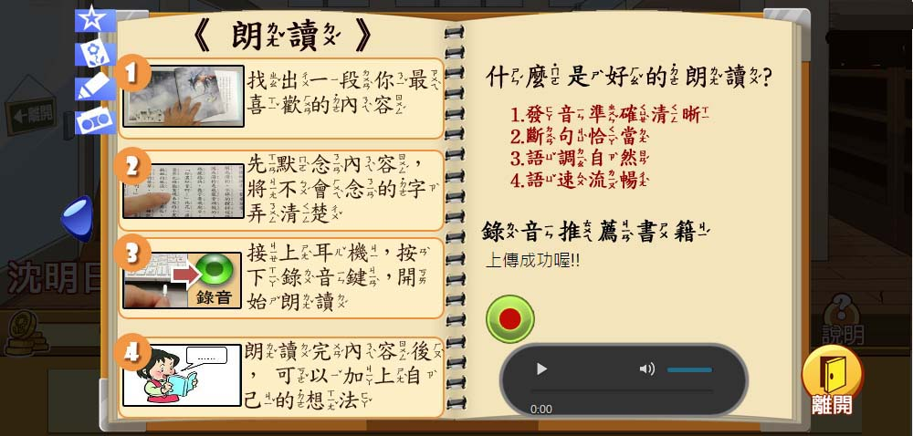

    <a id="shing_1" onClick="" style="position:absolute; left:527px; top:330px; width:90px; height:69px; cursor:pointer; display:none;" class = "shing"></a>
	<a onClick="take(1)" onMouseOver="shing(1,'block')" onMouseOut="shing(1,'none')" style="position:absolute; left:458px; top:269px; cursor:pointer; line-height:40px; text-align:center; width: 199px;" class = "text_1"> 點我開始錄音</a>
    
	
    <a id="shing_2" onClick="" style="position:absolute; left:555px; top:383px; width:300px; height:100px; cursor:pointer; display:none;" class = "shing"></a>
    <a onClick="take(2)" onMouseOver="shing(2,'block')" onMouseOut="shing(2,'none')" style="position:absolute; left:608px; top:352px; cursor:pointer; line-height:40px; text-align:center; width: 288px;" class = "text_1"> 點取可撥放已錄過的聲音</a>
    <a id="shing_3" onClick="" style="position:absolute; left:555px; top:383px; width:0px; height:0px; cursor:pointer; display:none;" class = "shing"></a>
    <a onClick="take(3)" onMouseOver="shing(3,'block')" onMouseOut="shing(3,'none')" style="position:absolute; left:368px; top:59px; cursor:pointer; line-height:40px; text-align:center; width: 276px;" class = "text_1"> 開始使用錄音的功能</a>
